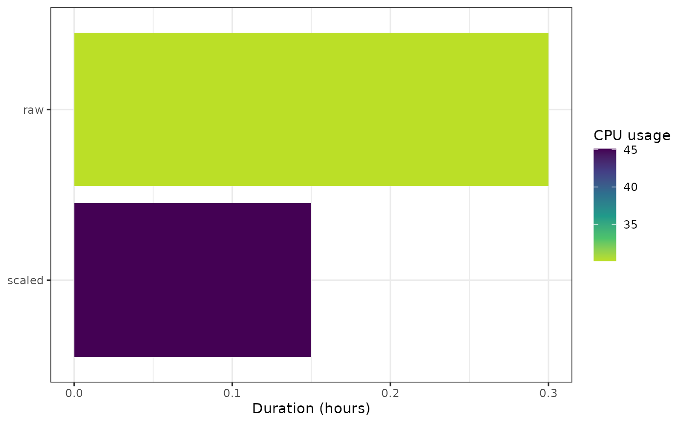

Plot the last-run duration of every stored target from an autometric log
Source: R/ga_autometric_runs.R
ga_autometric_lastrun.Rd
Reconstruct the resource impact of the last pipeline run from an
autometric log. Each (pid, phase) execution is collapsed to its
duration and mean CPU usage, the log is restricted to phases that are still
present in the targets store (targets::tar_objects()), and for
each target only the single longest run is kept. The result is one bar per
stored target, mapping duration to bar length and mean CPU usage to fill.
This is the log-based companion of ga_targets_meta_plot(): the
former reads the metadata, the latter re-derives the same "last run" picture
from the finer-grained resource samples. To visualize every run instead of
only the last, use ga_autometric_history().
Usage
ga_autometric_lastrun(
log,
store = targets::tar_config_get("store"),
object_names = NULL,
units_time = "hours",
units_memory = "gigabytes",
...
)Arguments
- log
Either a path to an
autometriclog file (read withautometric::log_read()) or a data frame already returned byautometric::log_read()(with at least the columnspid,phase,time,cpu).- store
(character, default
targets::tar_config_get("store")) Path to the targets data store, used to list the objects still present viatargets::tar_objects().- object_names
(optional character) Vector of target names to keep. When supplied,
storeis not queried. Useful for tests or to focus on a subset.- units_time, units_memory
Passed to
autometric::log_read()whenlogis a file path (defaults"hours"and"gigabytes").- ...
Additional arguments forwarded to
autometric::log_read().
Value
A ggplot object with one bar per stored target.
Examples
if (requireNamespace("autometric", quietly = TRUE)) {
log_df <- data.frame(
version = "0.1.2",
phase = rep(c("raw", "scaled"), each = 4),
pid = rep(c(1L, 2L), each = 4),
name = "local",
status = 0L,
time = c(0, 0.1, 0.2, 0.3, 0.3, 0.35, 0.4, 0.45),
core = runif(8, 0, 40),
cpu = runif(8, 0, 90),
resident = runif(8, 70, 90),
virtual = runif(8, 900, 1000)
)
ga_autometric_lastrun(log_df, object_names = c("raw", "scaled"))
}
